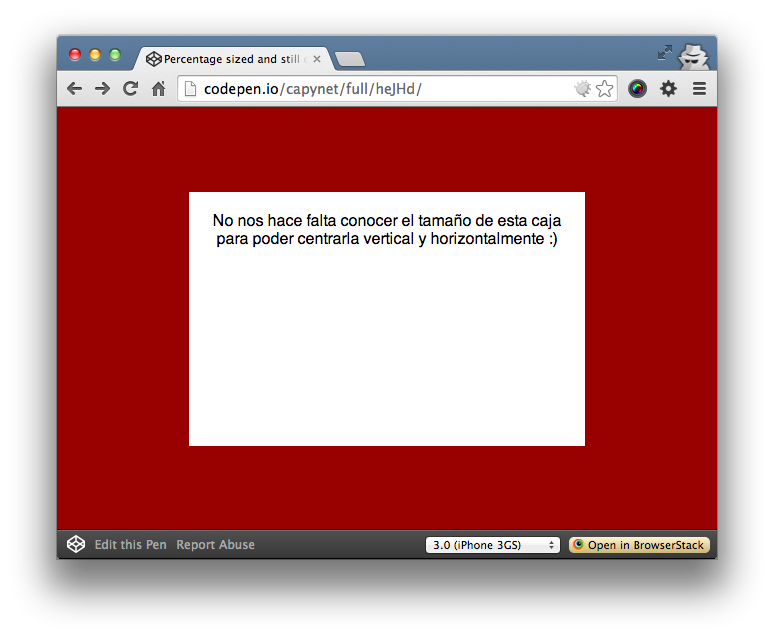

CSS: Centrar vertical y horizontalmente un elemento sin saber su tamaño
Centrar un elemento cuando se sabe el tamaño que tiene es fácil. Pero y si el elemento que queremos centrar tiene un tamaño expresado en % o no tiene un tamaño especificado, ya no es tan fácil centrarlo.
Ahora que prácticamente IE8 ya no se usa, lo podemos quitar de la ecuación y usar CSS un poco mas avanzado.
Dicho lo anterior, ahora que podemos usar la propiedad transform: translate();, ya podemos centrar vertical y horizontalmente cualquier elemento.
|
1 2 3 |
<div class="centrado-porcentual"> No nos hace falta conocer el tamaño de esta caja para poder centrarla vertical y horizontalmente :) </div> |
|
1 2 3 4 5 6 7 |
.centrado-porcentual { position: absolute; left: 50%; top: 50%; transform: translate(-50%, -50%); -webkit-transform: translate(-50%, -50%); } |
Resultado:

NOTA: si el elemento que quieres centrar está dentro de otro, recuerda que el padre tiene que tener una posición relativa.
Chau!
Idea original: css-tricks.com


{kind=link}
Excelente clase muchas gracias, disculpa ahora si quisiera centrar un div solamente de forma vertical que tiene un ancho de 100%?
gracias por el aporte
Esto funciona para todas las web?
Funciona con FF, CH e IE a partir de la versión 9: http://caniuse.com/#feat=transforms2d
Saludos.
HOLA
Muchisimas gracias por el aporte, no veas la de tiempo que llevaba buscando soluciones para el centrado vertical.
Un 10 🙂
Capy, me has hecho la noche con una solición elegante y sencilla. Muchas gracias y Saludos!!!!
Está bien, pero si restauras mucho la ventana, se pierde el texto de la capa. ¿Alguna otra solución? Un saludo
Por fin alguien que pone algo que realmente funciona!
Excelente!
¡¡¡Al fin!!!, he probado multitud de métodos y este es el único que ha funcionado correctamente.
gracias amigo